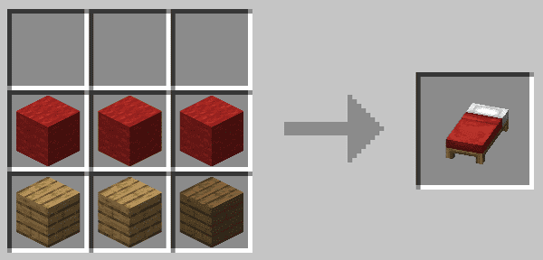
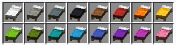

mesa de crafteo con 3
mesa de crafteo con 3  tablones y tres de
tablones y tres de  lana
lana
La cama es un bloque muy útil en el juego, debido a que se usa para saltar la noche.
Se puede conseguir crafteandola en una mesa de crafteo con 3 tablones y tres de lana

Tambien se puede encontrar en las aldeas
Existen distintas variantes de la cama, estas variantes simplemente cambia el color
Estas variantes se consiguen poniendo la cama y un tinte en una mesa de crafteo o craftear la cama con lana de color
